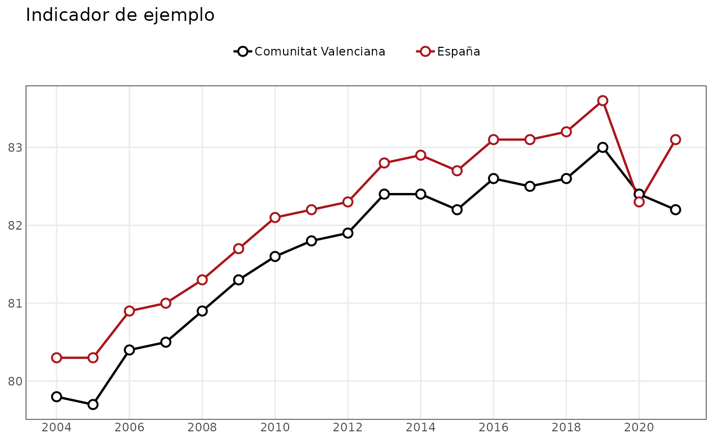
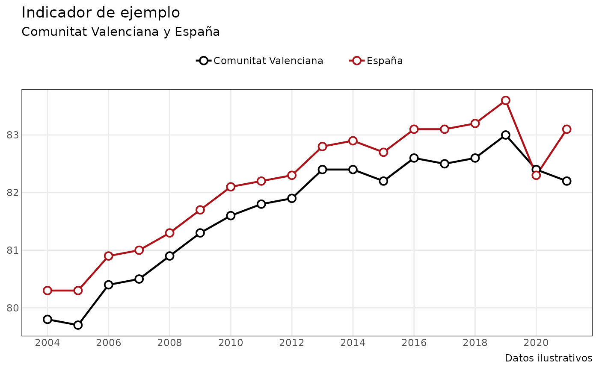

Genera un gráfico de líneas a partir de datos en formato largo.
Usage
grafico_lineas(
datos,
x = "anyo",
y = "valor",
grupo = NULL,
colores = NULL,
titulo = NULL,
subtitulo = NULL,
etiqueta_x = NULL,
etiqueta_y = NULL,
breaks_x = NULL
)Arguments
- datos
Un
data.framecon los datos que se desean representar.- x
Cadena de texto con el nombre de la variable utilizada en el eje X. Por defecto,
"anyo".- y
Cadena de texto con el nombre de la variable utilizada en el eje Y. Por defecto,
"valor".- grupo
Cadena de texto con el nombre de la variable que identifica distintas series. Si es
NULL, se representa una única serie.- colores
Vector de colores opcional. Si
grupono esNULL, puede utilizarse un vector nombrado cuyos nombres correspondan a los valores de la variable de agrupación. Si esNULL, se utiliza la escala de colores predeterminada deggplot2.- titulo
Título del gráfico. Por defecto,
NULL.- subtitulo
Subtítulo del gráfico. Por defecto,
NULL.- etiqueta_x
Etiqueta del eje X. Por defecto,
NULL.- etiqueta_y
Etiqueta del eje Y. Por defecto,
NULL.- breaks_x
Valores que deben mostrarse como cortes del eje X. Si es
NULLyxes numérica, se calculan automáticamente mediantescales::breaks_pretty().
Value
Un objeto de clase ggplot que puede modificarse posteriormente
mediante la gramática habitual de ggplot2.
Details
Puede representar una única serie o varias series diferenciadas mediante
una variable de agrupación. Los datos pueden proceder de
consultar_indicador() o de cualquier otro data.frame compatible.
Los datos deben contener una única observación por punto y serie. Si quedan dimensiones sin filtrar, la función informa de cuáles son y de sus valores disponibles.
Examples
datos_ejemplo <- data.frame(
territorio = rep(
c("Comunitat Valenciana", "España"),
each = 18
),
anyo = rep(2004:2021, times = 2),
valor = c(
# Comunitat Valenciana
79.8, 79.7, 80.4, 80.5, 80.9, 81.3,
81.6, 81.8, 81.9, 82.4, 82.4, 82.2,
82.6, 82.5, 82.6, 83.0, 82.4, 82.2,
# España
80.3, 80.3, 80.9, 81.0, 81.3, 81.7,
82.1, 82.2, 82.3, 82.8, 82.9, 82.7,
83.1, 83.1, 83.2, 83.6, 82.3, 83.1
)
)
colores_ejemplo <- c(
"Comunitat Valenciana" = "#000000",
"España" = "#AA151B"
)
p <- grafico_lineas(
datos_ejemplo,
grupo = "territorio",
colores = colores_ejemplo,
titulo = "Indicador de ejemplo"
)
p

# El resultado es un objeto ggplot y puede seguir personalizándose.
p +
ggplot2::labs(
subtitle = "Comunitat Valenciana y España",
caption = "Datos ilustrativos"
)
